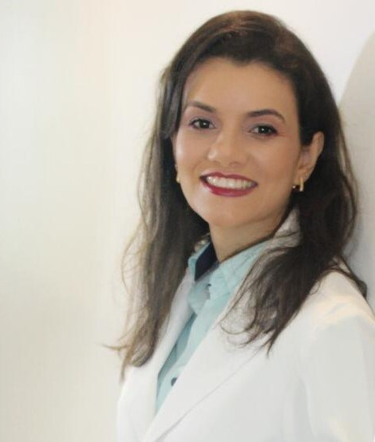

Início · Sobre
Dra. Luise Ribeiro Daltro, dermatologista em Salvador.
Formada pela UFBA, com residência em Clínica Médica e especialização em Dermatologia na USP de Ribeirão Preto. Tem título de especialista em Dermatologia, é membro titular da SBD e preceptora da residência de Dermatologia da UFBA.
Apresentação
Nas palavras dela

“Sou plenamente realizada com a minha profissão e trato os meus pacientes como eu mesma gostaria de ser tratada. […] Acredito que a medicina deve ser exercida de forma humana e responsável.”Dra. Luise Daltro, perfil na Doctoralia
Formação
Formação
- 2005–2010 · Graduação em MedicinaFaculdade de Medicina da Bahia, Universidade Federal da Bahia (UFBA).
- 2010 · Estágio em Bordeaux, FrançaHôpital des Enfants do Centre Hospitalier Universitaire (CHU) de Bordeaux.
- 2011–2013 · Residência em Clínica MédicaHospital das Clínicas da Faculdade de Medicina de Ribeirão Preto, USP.
- 2013–2015 · Especialização em DermatologiaUSP de Ribeirão Preto.
- Título de especialista em DermatologiaSociedade Brasileira de Dermatologia (SBD) e AMB · RQE 13068.
- 2018–2021 · Especialização em Preceptoria em SaúdeUFRN, com trabalho sobre a reorganização das atividades da residência de Dermatologia do Hospital Universitário Prof. Edgard Santos.
- Desde 2025 · MestradoPrograma de Pós-Graduação em Medicina e Saúde (PPGMS) da UFBA, em andamento.
Fontes: perfil na Doctoralia, me.med.br, Núcleo Oscar Freire, PPGMS/UFBA e currículo Lattes.
Ensino
Ensino na UFBA
De volta a Salvador em 2015, foi aprovada em concurso para a UFBA. No Hospital Universitário Prof. Edgard Santos, atua como preceptora da residência médica nos ambulatórios de psoríase, hidradenite supurativa, dermatite atópica, dermatologia pediátrica e acne, segundo o texto informado por ela ao PPGMS.
“Nos últimos anos tive a honra de ser convidada para dar palestras e aulas a outros dermatologistas em diversos simpósios, e apesar de gostar muito de ensinar, a minha maior realização é ver meus pacientes bem com acompanhamento humanizado em consultório!”Dra. Luise Daltro, perfil na Doctoralia
Pesquisa
Publicações indexadas no PubMed
Relatos de casos publicados: nevo azul celular atípico, melanoma acral que imitava micose de dobra e leishmaniose cutânea verrucosa.
Eventos
Aulas e eventos
- XXVIII Jornada Baiana de Dermatologia (2022): “Psoríase além dos tópicos: como fazer no consultório”.
- 6º Simpósio de Imunobiológicos e XIV Simpósio de Psoríase da SBD (2022): “Psoríase Pediátrica: Fototerapia”.
- 75º Congresso da SBD (2022): “Líquen Plano Pigmentoso induzido por Adalimumabe: segundo caso relatado na literatura”.
- I Simpósio On-line de Dermatologia para o Clínico (2020): “Infecções por Herpes simples vírus e Varicela Zoster vírus”.
- III Simpósio Interdisciplinar em Doenças Inflamatórias Intestinais (2018): “Discussão de caso clínico: Hidradenite Supurativa”.
Fonte: currículo Lattes. A página do Núcleo Oscar Freire cita ainda palestras no Congresso Nacional de Psoríase e na Jornada Baiana de Dermatologia, ambas em 2022, e o livro “Dermatologia – Preparatório pra Prova de Título de Especialista”, do qual ela é autora.
Registro
Registro profissional
CRM-BA 22771
Conselho Regional de Medicina da Bahia.
RQE 13068 · Dermatologia
Conferido no localizador público da SBD.
Membro titular da SBD
Categoria informada no perfil público de membro da Sociedade Brasileira de Dermatologia.
Currículo Lattes
Dúvidas frequentes
Perguntas sobre a médica
Onde a Dra. Luise se formou?
Em Medicina pela UFBA (2005–2010), com residência em Clínica Médica (2011–2013) e especialização em Dermatologia (2013–2015) na USP de Ribeirão Preto.
Ela é membro da Sociedade Brasileira de Dermatologia?
Sim, membro titular, segundo o localizador público da SBD.
Quais temas ela ensina na UFBA?
Segundo o texto dela no PPGMS/UFBA, ela é preceptora da residência médica nos ambulatórios de psoríase, hidradenite supurativa, dermatite atópica, dermatologia pediátrica e acne.
Agende
Tempo para ouvir, examinar e explicar.
Núcleo Oscar Freire, Rio Vermelho, Salvador. Atendimento com hora marcada: confirme dia e horário com a equipe.